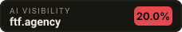

As of 2026-09-21, ftf.agency was named in 1 of 5 unbranded buyer questions put to AI answer engines (20.0% visibility). Named in its place: webfx.com, victoriousseo.com, thehoth.com.
5 questions real buyers type, fired at 2 AI answer engines. Everything below is the raw answer — not an estimate.
| 1 | webfx.com | 3× | |
| 2 | victoriousseo.com | 2× | |
| 3 | thehoth.com | 2× | |
| 4 | boostability.com | 2× | |
| 5 | straightnorth.com | 2× | |
| 6 | singlegrain.com | 1× | |
| 7 | siegemedia.com | 1× | |
| 8 | directiveconsulting.com | 1× | |
| 9 | terakeet.com | 1× | |
| 10 | outerboxdesign.com | 1× |
ai-terbuka How do I choose the best enterprise SEO agency for a complex B2B website?Halo! Sebagai asisten AI, saya siap membantu Anda memilih mitra terbaik untuk mengoptimalkan situs web B2B enterprise Anda yang kompleks. Berikut adalah 10 rekomendasi agensi SEO enterprise terbaik di dunia yang memiliki rekam jejak terbukti dalam menangani situs B2B skala besar: 1. **Single Grain** - singlegrain.com - Mereka memiliki spesialisasi dalam strategi SEO B2B berbasis data dan pertumbuhan skala besar yang dipimpin oleh pakar industri Eric Siu. 2. **Siege Media** - siegemedia.com - Agensi ini sangat unggul dalam pembuatan konten berkualitas tinggi yang dirancang khusus untuk mendorong tautan (backlink) dan lalu lintas organik bagi situs B2B kompleks. 3. **Directive Consulting** - directiveconsulting.com - Mereka adalah agensi spesialis B2B SaaS dan teknologi enterprise yang fokus pada metrik pendapatan (revenue), bukan sekadar lalu lintas situs. 4. **WebFX** - webfx.com - Dengan tim besar dan teknologi AI proprietary bernama MarketingCloudFX, mereka mampu mengelola kampanye SEO skala besar untuk situs B2B yang rumit. 5. **Victorious** - victoriousseo.com - Agensi pemenang penghargaan ini menawarkan strategi SEO yang sangat terstruktur dan transparan, ideal untuk menavigasi arsitektur situs B2B yang kompleks. 6. **Terakeet** - terakeet.com - Mereka berspesialisasi dalam reputasi merek enterprise dan SEO skala besar menggunakan teknologi kepemilikan untuk mendominasi pangsa pasar organik. 7. **OuterBox** - outerboxdesign.com - Berpengalaman lebih dari 17 tahun, mereka ahli dalam menyatukan SEO teknis dan strategi pemasaran B2B untuk situs web dengan struktur produk yang rumit. 8. **iPullRank** - ipullrank.com - Terkenal dengan keahlian SEO teknis yang sangat mendalam, agensi ini sangat cocok untuk menyelesaikan masalah arsitektur dan audit situs B2B enterprise yang rumit. 9. **Coalition Technologies** - coalitiontechnologies.com - Mereka menggabungkan keahlian pengembangan web tingkat lanjut dengan SEO untuk memastikan situs B2B yang kompleks dapat diindeks dengan sempurna oleh mesin pencari. 10. **From The Future (FTF)** - ftf.agency - Agensi ini berfokus pada SEO teknis tingkat lanjut dan strategi konten berbasis data untuk membantu perusahaan B2B enterprise memenangkan persaingan yang ketat.
ai-cari What are the most cost-effective SEO agency options or packages for a local small business?**Catatan:** Saya tidak dapat melakukan pencarian web secara langsung saat ini, sehingga daftar di bawah ini disusun berdasarkan pengetahuan yang tersedia hingga 2024 dan sumber‑sumber publik yang umum dikenal. Silakan memverifikasi masing‑masing paket dan harga terbaru di situs resmi mereka sebelum memutuskan. 1. **The Hoth – thehoth.com** – Menawarkan paket “Local SEO” dengan harga terjangkau dan laporan bulanan otomatis, cocok untuk usaha kecil yang butuh visibilitas lokal cepat. 2. **Boostability – boostability.com** – Fokus pada bisnis lokal dengan paket bulanan yang mencakup optimasi Google My Business dan backlink lokal, tanpa kontrak jangka panjang. 3. **SEOReseller – seoreseller.com** – Menyediakan layanan “Local SEO” white‑label dengan tarif per proyek yang fleksibel, ideal untuk pemilik usaha yang ingin kontrol biaya. 4. **WebFX – webfx.com** – Memiliki paket “Local SEO” yang menekankan audit situs, optimasi on‑page, dan citasi lokal dengan harga kompetitif untuk usaha kecil. 5. **Straight North – straightnorth.com** – Menawarkan paket “Local SEO” yang mencakup manajemen review dan optimasi peta, dengan struktur biaya berbasis hasil. 6. **Victorious SEO – victoriousseo.com** – Menyediakan paket “Local SEO” yang menekankan strategi kata kunci niche dan pelaporan transparan, cocok untuk anggaran terbatas. 7. **SEO.com – seo.com** – Paket “Local SEO” mereka mencakup audit lengkap, optimasi konten, dan penciptaan citasi lokal dengan tarif bulanan yang jelas. 8. **Ignite Visibility – ignitevisibility.com** – Menawarkan paket “Local SEO” yang terjangkau dengan fokus pada optimasi Google My Business dan backlink lokal berkualitas. 9. **OuterBox – outerboxdesign.com** – Menyediakan layanan “Local SEO” khusus e‑commerce kecil dengan harga paket yang terstruktur dan laporan kinerja rutin. 10. **HigherVisibility – highervisibility.com** – Paket “Local SEO” mereka menekankan pada penciptaan citasi, optimasi on‑page, dan manajemen ulasan dengan biaya yang bersaing untuk bisnis lokal. *Pastikan untuk menghubungi masing‑masing agensi, menanyakan detail paket, serta meminta contoh laporan atau studi kasus agar dapat menilai kecocokan dengan kebutuhan dan anggaran bisnis Anda.*
ai-terbuka What are the most cost-effective SEO agency options or packages for a local small business?Halo! Tentu, sebagai asisten AI, saya siap membantu Anda menemukan pilihan agensi SEO lokal yang paling hemat biaya dan cocok untuk bisnis kecil Anda. Berikut adalah 10 rekomendasinya: 1. **Boostability** - boostability.com - Mereka fokus pada SEO kemitraan dan usaha kecil dengan harga yang sangat terjangkau serta dirancang khusus untuk membantu bisnis lokal tumbuh. 2. **The HOTH** - thehoth.com - Menyediakan paket SEO "ala carte" dan layanan terkelola yang sangat fleksibel, sehingga Anda hanya membayar layanan yang benar-benar dibutuhkan. 3. **PageTraffic** - pagetraffic.com - Menawarkan paket SEO bulanan dengan harga yang sangat kompetitif dan transparan, ideal untuk usaha kecil yang memiliki anggaran terbatas. 4. **Main Street ROI** - mainstreetroi.com - Spesialis dalam membantu bisnis lokal melalui paket SEO terjangkau yang fokus pada hasil taktis dan pengembalian investasi (ROI) yang jelas. 5. **Straight North** - straightnorth.com - Memiliki opsi paket SEO lokal yang fleksibel dengan laporan yang sangat transparan untuk membantu bisnis kecil menarik pelanggan di area sekitar. 6. **Local SEO Search** - localseosearch.ca - Agensi butik yang menawarkan layanan SEO lokal yang personal dan hemat biaya, yang disesuaikan khusus untuk bisnis keluarga dan UMKM. 7. **SEO Discovery** - seodiscovery.com - Terkenal dengan layanan SEO berbiaya rendah namun komprehensif yang sangat ramah bagi anggaran startup dan bisnis lokal kecil. 8. **WebFX** - webfx.com - Meskipun berskala besar, mereka menawarkan paket SEO lokal khusus dengan harga transparan yang dapat disesuaikan dengan kemampuan finansial bisnis kecil. 9. **OuterBox** - outerboxdesign.com - Menyediakan strategi SEO lokal yang terukur dan efisien untuk membantu toko fisik Anda mendominasi hasil pencarian di wilayah sekitar Anda. 10. **Delante** - delante.co - Menawarkan model kerja sama SEO bulanan yang fleksibel dan berorientasi pada hasil tanpa kontrak jangka panjang yang memberatkan keuangan bisnis Anda. Semoga daftar ini membantu Anda menemukan mitra SEO yang paling sesuai dengan anggaran dan kebutuhan bisnis lokal Anda!
ai-terbuka Are there better alternatives to hiring a traditional SEO agency if I have a limited marketing budget?Halo! Jika Anda memiliki anggaran pemasaran yang terbatas, berikut adalah 10 alternatif terbaik selain menyewa agensi SEO tradisional yang dapat membantu Anda mengoptimalkan situs web secara efektif dan hemat: 1. Fiverr - fiverr.com - Platform untuk mencari freelancer SEO lepas dengan harga terjangkau yang sesuai dengan anggaran fleksibel Anda. 2. Upwork - upwork.com - Tempat menemukan spesialis SEO independen profesional yang bisa disewa per proyek tanpa komitmen kontrak jangka panjang. 3. Semrush - semrush.com - Alat SEO lengkap yang memungkinkan Anda melakukan riset kata kunci dan audit situs secara mandiri tanpa biaya agensi yang mahal. 4. Ahrefs - ahrefs.com - Menyediakan alat analisis kompetitor dan optimasi konten yang kuat untuk membantu Anda mengelola SEO secara mandiri. 5. Surfer SEO - surferseo.com - Membantu Anda menulis konten yang ramah mesin pencari dengan panduan berbasis AI yang sangat mudah diikuti pemula. 6. Yoast SEO - yoast.com - Plugin WordPress yang memudahkan Anda melakukan optimasi SEO on-page secara instan tanpa perlu keahlian pemrograman. 7. Moz Academy - moz.com - Menyediakan kursus dan panduan SEO gratis untuk membantu Anda atau tim Anda mempelajari dasar-dasar SEO secara mandiri. 8. Google Search Console - search.google.com - Alat gratis resmi dari Google untuk memantau kinerja pencarian dan memperbaiki masalah teknis situs Anda sendiri. 9. AnswerThePublic - answerthepublic.com - Alat riset kata kunci gratis untuk menemukan pertanyaan konsumen sehingga Anda bisa membuat konten yang tepat sasaran. 10. Ubersuggest - neilpatel.com - Platform SEO ramah anggaran yang memberikan analisis situs dan ide konten yang sangat mudah dipahami oleh pemula. Semoga rekomendasi ini membantu Anda mengembangkan bisnis dengan anggaran yang efisien! Ada yang ingin Anda tanyakan lebih lanjut?
ai-terbuka What red flags should I look for in reviews and proposals before signing a contract with an SEO agency?Berikut adalah 10 tanda bahaya (*red flags*) pada ulasan dan proposal yang perlu Anda perhatikan sebelum menandatangani kontrak dengan agensi SEO: 1. **Jaminan Peringkat #1 di Google** - Strategi Proposal - Algoritma mesin pencari selalu berubah dan tidak dapat dikontrol oleh pihak ketiga, sehingga janji pasti di peringkat teratas adalah klaim yang tidak realistis. 2. **Pola Ulasan Positif yang Generik atau Seragam** - Ulasan & Reputasi - Ulasan bintang lima tanpa detail spesifik atau dibuat serentak dalam rentang waktu singkat sering kali merupakan hasil manipulasi atau pembelian ulasan palsu. 3. **Janji Hasil Instan dalam Hitungan Hari** - Linimasa Kerja - SEO organik adalah proses jangka panjang yang membutuhkan waktu berbulan-bulan, sehingga hasil instan biasanya mengindikasikan penggunaan taktik manipulatif (*black-hat*) yang berbahaya. 4. **Harga Layanan yang Jauh di Bawah Standar Pasar** - Anggaran & Biaya - SEO berkualitas memerlukan keahlian teknis dan pembuatan konten mendalam, sedangkan harga yang terlalu murah umumnya menggunakan alat otomatisasi berkualitas rendah yang berisiko merusak situs. 5. **Metode Kerja Dirahasiakan (*Secret Sauce*)** - Transparansi & Etika - Agensi profesional selalu terbuka mengenai strategi optimasi mereka, sedangkan metode rahasia sering kali menyembunyikan praktik ilegal yang rentan terkena penalti Google. 6. **Penawaran Paket Ribuan Backlink Cepat** - Strategi *Off-Page* - Taktik ini biasanya menggunakan jaringan situs privat berkulitas rendah (*PBN/Spam*) yang dapat membuat situs Anda di-deindeks oleh mesin pencari. 7. **Ketiadaan Studi Kasus Nyata atau Bukti Portofolio** - Rekam Jejak Agensi - Agensi yang berpengalaman selalu memiliki data metrik atau riwayat pertumbuhan klien sebelumnya sebagai bukti kemampuan kerja mereka. 8. **Banyak Keluhan Ulasan Terkait Komunikasi yang Buruk** - Manajemen & Layanan Klien - Keluhan berulang mengenai keterlambatan laporan dan sulitnya menghubungi tim menunjukkan sistem kerja agensi yang tidak terorganisir dengan baik. 9. **Rincian *Deliverables* dan KPI yang Tidak Jelas** - Ruang Lingkup Kontrak - Proposal tanpa metrik keberhasilan terukur dan tanpa rincian tugas bulanan yang spesifik menyulitkan Anda untuk mengevaluasi hasil kerja mereka. 10. **Kepemilikan Akun dan Aset Ditahan oleh Agensi** - Legalitas & Kontrak - Agensi yang tidak memberikan akses penuh atau menahan hak kepemilikan atas akun analitik dan konten situs berpotensi menyandera aset digital bisnis Anda saat ko
Not being mentioned is NOT proof you are never mentioned. This is one moment, one question set, the engines listed above.
Facts checked directly against your site — no AI involved, so this part is true even when the answer engines are rate-limited.
Answer engines quote the page that states the facts plainly. A marketing homepage gives them nothing to quote.
1 hourPages a crawler never finds can never be cited.
5 minuteswebfx.com is named in your place. The engines quote whoever put the answer in plain text first.
half a dayWe re-run these exact questions and email you only when something moves — a new rival appears, or you drop out of an answer. No account, no card.
Opens your mail app and sends straight to us — no third-party form service in between.
The badge reads live from this page. If your score improves, the badge changes with it.

<a href="https://ocklu.com/airank/u/ftf.agency.html"><img src="https://ocklu.com/airank/badge/ftf.agency.svg" alt="AI visibility score for ftf.agency" width="228" height="40"></a>This page is one photograph. AI answers shift every week — and the rivals named today are taking the buyers who were looking for you.
Full report — $39 onceDeeper run on your domain: more buyer questions, every verbatim answer, the competitor board and the fix list. Delivered by email.Lite — $19/mo20 prompts monitored, 2 AI engines, weekly re-checkPro — $99/mo100 prompts monitored, all engines, DAILY re-checkAgency — $299/mo400 prompts, 15 client brands, white-label reports